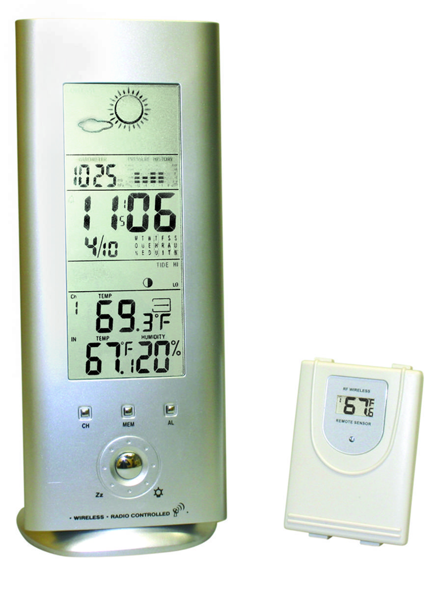

Revolutionizing Atmospheric Pressure Measurement
Digital barometers represent a significant leap in barometric technology, offering precise and compact solutions for measuring atmospheric pressure. Unlike traditional mercury or aneroid barometers, digital barometers rely on electronic sensors to detect pressure changes.
These sensors, often made from piezoelectric materials or silicon, measure pressure variations and convert them into digital readings. This data is frequently used in modern applications like smartphones, weather stations, and GPS systems to enhance accuracy.
Digital barometers are valued for their precision, portability, and ability to integrate seamlessly with other technologies, making them indispensable in meteorology, aviation, and even consumer electronics.
